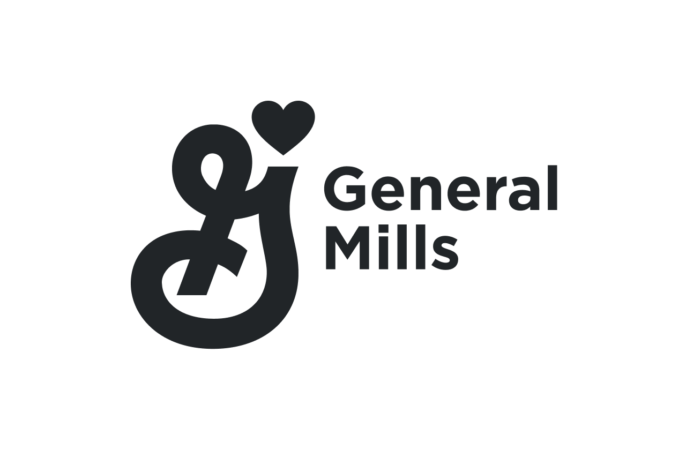
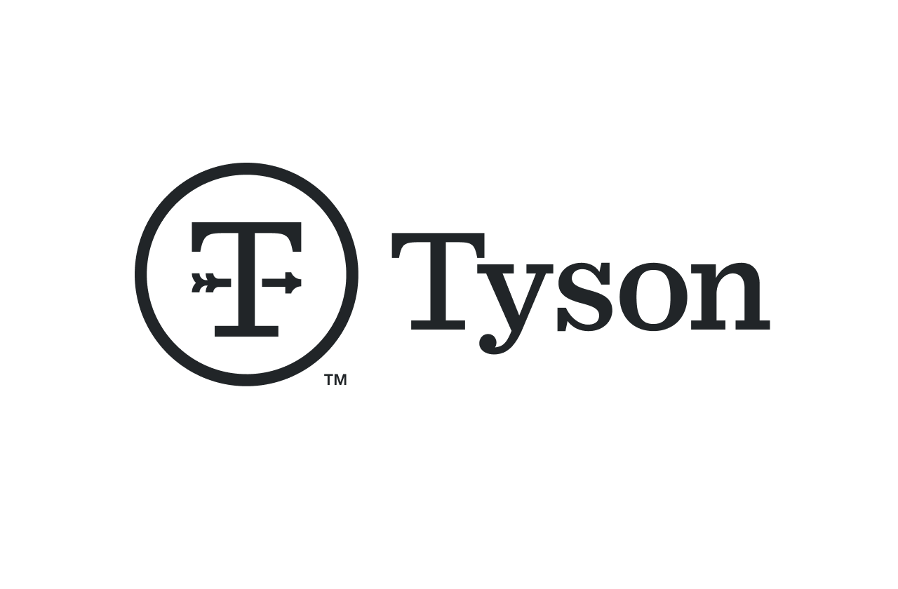
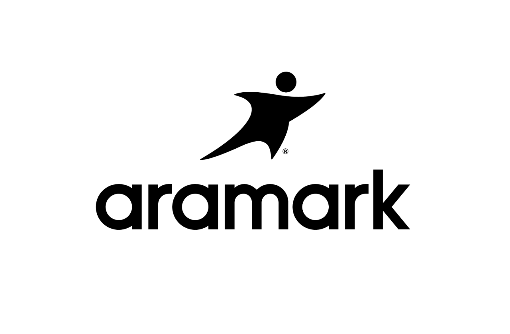
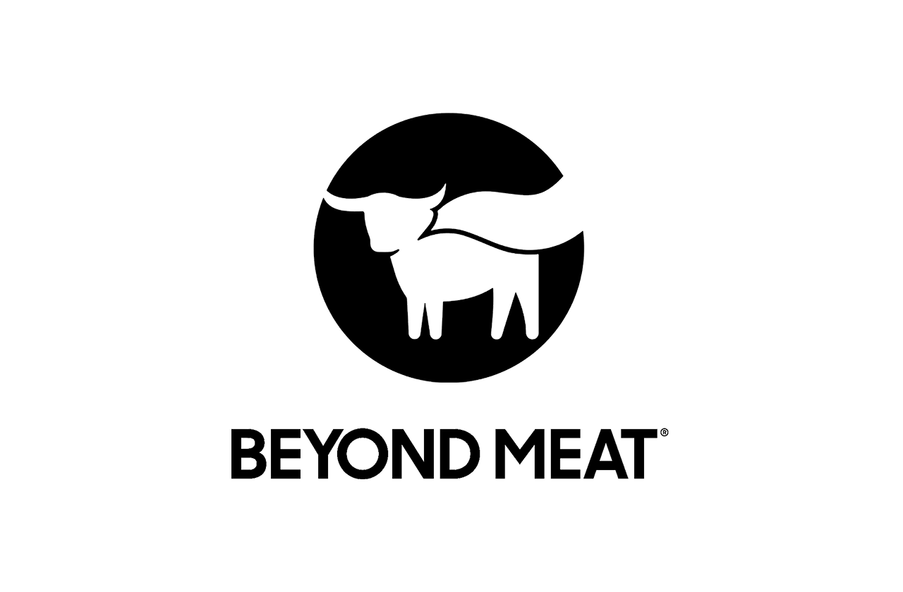
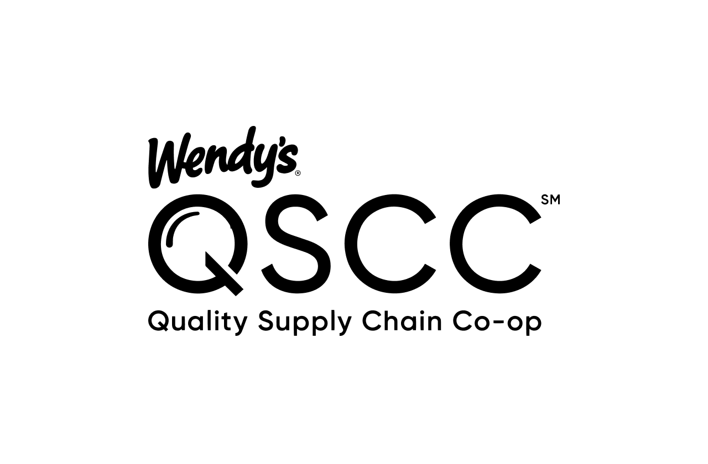

食品与饮料







面向食品与饮料行业的 Foundry
Foundry 正在彻底改变食品与饮料价值链。从端到端的供应链规划和动态库存管理，到最大化生产产量和减少浪费，Foundry 对整个行业的关键系统进行了简化和扩展。我们的平台帮助企业加强食品安全和质量保证、优化销货成本、进行精确的财务预测，并实现餐厅订餐和配送的自动化。
Foundry 帮助食品制造商、食品服务组织和快餐店提升运营水平并获取巨大价值。通过整合分散的数据并构建增强核心流程的智能工作流，Palantir 正在推动食品与饮料企业迈入 AI 时代。
我们在食品与饮料领域的工作，确保食品与饮料供应商在时间、资源和成本方面尽可能高效地运作，为世界各地的人们提供食物。
借助对运营、库存、物流和供应链的集成实时视图，企业可以简化运营、优化决策并推动企业成功。面对行业未来的诸多未知因素——包括大宗商品成本上涨、市场波动、劳动力短缺以及日益复杂的网络——Palantir 帮助企业利用其数据运行多种情景/假设分析的能力，使企业能够以经济高效的方式，以必要的速度应对各种问题。
我们的产品与服务
Tyson
该系统被用于优化产品分销、运输运营和库存管理，并预测疫情对劳动力的影响。
通过这些战略性实施，Tyson Foods 在两年内在 20 个用例中实现了高达 2 亿美元的成本节约，展示了该平台在变革其运营方面的巨大价值和速度。
GMI
Palantir 目前正与 General Mills 合作，以提升其供应链效率并创新其智能执行能力。
我们正在利用 Palantir Foundry 和 AIP，在物流与货运优化、减少浪费、供应链风险管理、销售与运营规划以及基于 AI 的寻源与采购运营等方面实现显著提升。

Aramark
Aramark 正在应用 Foundry AIP 来匹配名称相似的销售点产品，在初始匹配中 30% 的匹配达到 99% 的置信度，随后实现了自动化，大幅减少了人工干预的需求。
通过利用本体论（Ontology），Aramark 能够将产品从采购端关联到销售端，创建完整的数据血缘，实现原子级细化的财务和消费者分析，未来的工作将围绕整合非结构化数据以更好地了解客户之声，以及创建完整的数字孪生来预测和模拟未来运营。
Wendys
Wendy's Quality Supply Chain Co-op (QSCC) 已利用 AIP 开发应用程序，通过主动识别和解决产品短缺问题，促进供应链管理的改善。
该系统利用高级分析技术，整合与供应商的非结构化电子邮件往来，提供库存变化的洞察，提供短缺问题的解决方案，并简化沟通和决策，最终提升 Wendy's 餐厅的供应效率和客户体验。
Beyond Meat
Beyond Meat 的供应链运行在 Palantir AIP 之上，涵盖从库存管理到生产规划和订单履行的全过程。
借助 AIP，Beyond Meat 的运营每年节省了 2000 万美元以上，并节省了无数工时。AIP 将 Beyond Meat 跨越 35 个以上数据源的数据连接起来，构建统一的库存视图，帮助生产规划人员了解订购什么、如何在整个网络中重新平衡库存以及如何最优地安排生产顺序。AIP 还帮助其客户体验团队自动完成约 50% 的订单，确保 AI 处理简单的事务，而人类则可以腾出时间专注于更具影响力的决策。